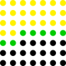

Graph random walk
本页介绍图上随机游走问题．主要从网格图、稀疏图、一般图三个角度进行探究，介绍了解决这类问题的各种方法，并对比了它们在解决各种问题时的优缺点．
定义
给定一张有向简单图 $G=(V, E)(V={v_1, v_2, \cdots, v_{|V|}})$ 和起点 $s \in V$，终点 $t \in V$，每条边 $e=\left(x, y\right)$ 有正权值 $w_e$，满足 $\forall x \in V \backslash\left{t\right}$，$\sum_{\left(x, y\right) \in E} w_{\left(x, y\right)}=1$，且对于任意点 $x$ 都存在一条从 $x$ 出发到达 $t$ 的路径．有一枚棋子从起点出发，每秒从当前所在点 $x$ 以 $w_{(x, y)}$ 的概率选择出边 $\left(x, y\right)$ 并走向 $y$，到达终点则停止，求期望花费时间．
事实上，这个问题也可以写成矩阵的形式．定义矩阵 $P$：
$$ P_{x, y}= \begin{cases} w_{(x, y)} & \text{if } (x, y) \in E \text{ and } x \neq t \ 0 & \text{if } (x, y) \notin E \text{ or } x=t \ \end{cases} $$
要求的答案即为：
$$ \sum_{k \geq 0} k \times\left(P^k\right)_{s, t} $$
其中 $\left(P^k\right)_{s, t}$ 表示走了 $k$ 步第一次到达终点的概率．当图有限且所有点都能到达终点时，由 $P$ 的定义可以证明其特征值都小于 1，所以答案一定是收敛的．
为了方便描述，在本页中如无特殊说明，均用 $n$ 代指 $|V|$，$m$ 代指 $|E|$．
另外，在本页中，稀疏图指边数和点数同阶的图．
网格图
???+ note "例题 1 Circles of Waiting" 有一枚棋子起始被放在平面直角坐标系的 $(0,0)$ 点．每秒棋子会随机移动．假设它当前在 $(x, y)$，它下一秒有 $p_1$ 的概率移动到 $(x-1, y)$，$p_2$ 的概率移动到 $(x, y-1)$，$p_3$ 的概率移动到 $(x+1, y)$，$p_4$ 的概率移动到 $(x, y+1)$．保证 $p_1+p_2+p_3+p_4=1$． 求期望经过多少时间它会移动到一个离原点的欧几里得距离大于 $R$ 的位置．$0 \leq R \leq 50$，$p_1, p_2, p_3, p_4>0$，答案对 $10^9+7$ 取模．
朴素做法
记 $f(i, j)$ 表示在棋子在 $(i, j)$ 时移动到一个离原点的欧几里得距离大于 $R$ 的位置的期望时间，转移方程为：
$$ f(i, j)= \begin{cases} p_1 f(i-1, j) + p_2 f(i, j-1) + p_3 f(i+1, j) + p_4 f(i, j+1) + 1 & i^2 + j^2 \leq R^2 \ 0 & i^2 + j^2 > R^2 \end{cases} $$
由于转移并不存在拓扑序，需要使用高斯消元求解．时间复杂度 $O\left(R^6\right)$，无法通过本题．
直接消元法
注意到需要消元的方程的系数大多数都是 0，消元时只对值非 0 的位置进行计算就可以降低复杂度．
考虑消元的过程，将方程按照在坐标系中从上到下，同一层中从左到右的顺序进行消元，将已经消元过的方程染成黄色，与黄色点相邻的点染成绿色，其余点染成黑色，如下图：

接下来要对下一个绿色格子对应的方程进行消元．在这个方程中，只有绿色格子和它下方的第一个黑色格子对应的变量系数可能不为 0 ; 而只有绿色格子和它下方的第一个黑色格子对应的方程中，当前格子对应的变量系数可能不为 0．
注意到绿色格子只有 $O(R)$ 个，所以单个方程消元的时间复杂度为 $O\left(R^2\right)$．一共只有 $O\left(R^2\right)$ 个方程，所以时间复杂度降低为 $O\left(R^4\right)$，可以通过本题．
主元法
方程和变量都有 $O\left(R^2\right)$ 个，如果能将规模缩小至 $O(R)$，那么朴素的高斯消元就能通过了．
将每行从左到右第一个格子对应的变量设为主元，共 $2 R+1$ 个，设法将其他格子对应的变量用关于这些主元的线性函数表示．从左到右逐列考虑，对于当前列的每个格子 $(i, j)$，注意到 $f(i, j)， f(i-1, j)， f(i, j-1)， f(i, j+1)$ 都是已知的关于主元的线性函数，将转移方程移项，有：
$$ f(i+1, j)=\frac{f(i, j)-p_1 f(i-1, j)-p_2 f(i, j-1)-p_4 f(i, j+1)-1}{p_3} $$
这样我们就能得到 $f(i+1, j)$ 关于主元的线性函数表示．如果 $(i+1, j)$ 已经离原点欧几里得距离超过 $R$ 了，则可以得到一个方程：$f(i+1, j)=0$．最终，会得到 $2 R+1$ 个方程，对这些方程进行高斯消元即可．
在递推关于主元的线性函数的阶段，共有 $O\left(R^2\right)$ 个变量，递推单个变量需要花费 $O(R)$ 的时间；之后，将问题的规模缩减到了 $O(R)$．两部分的时间复杂度均为 $O\left(R^3\right)$，总的时间复杂度也为 $O\left(R^3\right)$，可以通过本题．
两种做法的对比
下面从多种方面对比两种做法：
从时间复杂度方面，主元法在网格图上的最坏时间复杂度为 $O(n \sqrt{n})$（当网格图长和宽都为 $O(\sqrt{n})$ 级别时时间复杂度最高），直接消元法在网格图上最坏时间复杂度为 $O\left(n^2\right)$，主元法较优．
从精度方面，对于一些需要进行实数计算而不是取模的题目，直接消元法的精度优于主元法．
从适用性方面，两种做法适用于不同的方面．
当网格图中存在障碍或者走某些边的概率为 $0$ 时，对于每个障碍或者概率为 $0$ 的边主元法需要增加一个主元，当障碍或者概率为 $0$ 的边的数量多于 $O(R)$ 时，主元法的时间复杂度会增加，而直接消元法的时间复杂度仍然不变．
但主元法还可以做类似于网格图的转移方程的消元，例如 $f(i, j)=p_1 f(i+1, j)+p_2 f(i, j+1)+p_3 f(\operatorname{pre}(i, j))+1$，其中 $\operatorname{pre}(i, j)=(x, y)(x \leq i, y \leq j)$ 是问题给定的值，而直接消元法的复杂度分析在这种模型中并不适用．
除此以外，网格图邻接矩阵行列式的计算，也不能使用主元法，只能用直接消元法来优化时间复杂度．
综上，两种做法各有所长，需要根据具体题目分析采用不同的做法．
稀疏图
???+ note "例题 2 Expected Value" 给定一张简单无向连通稀疏图 $G=(V, E)$，有一枚棋子起始被放在 $v_1$，每秒棋子会从与当前点相连的边中等概率选择一条走到出边指向的点，求到达 $v_n$ 的期望时间．$n \leq 2000$，答案对 $p$ 取模，$p$ 是在区间 $\left[10^9, 1.01 \times 10^9\right]$ 内随机生成的一个质数．
基础知识
定义 4.1. 所有满足 $p(A) = 0$ 的多项式 $p(λ)$ 称为矩阵 $A$ 的零化多项式．
定义 4.2. 记 $I_n$ 表示 $n$ 阶单位矩阵，定义一个 $n × n$ 矩阵 $A$ 的特征多项式为 $p(λ) = \det(λI_n - A)$，其中 $\det$ 表示一个矩阵的行列式． 不难发现，一个 $n$ 阶矩阵 $A$ 的特征多项式的次数不超过 $n$．
定理 4.2.（Cayley–Hamilton 定理）任意矩阵的特征多项式是它的零化多项式．
所以，一个 $n$ 阶矩阵的次数最小的零化多项式的次数也不超过 $n$．
求解原问题
注意到，期望走的时间 $E(t)=\sum_{i\geq0}\Pr[t>i]$，如果我们能求出走了 $i$ 步还没有结束的概率，对所有 $i ≥ 0$ 求和即为答案．
记 $f(i, j)$ 表示走了 $i$ 步，当前停留在 $j$，且没有走到过 $n$ 的概率，那么有：
$$ f(i,j)=\sum_{(k,j)\in E}\frac{f(i-1,k)}{\deg_k}(j\neq n) $$
其中 $\deg_k$ 表示 $k$ 的度数．
注意到 $f$ 的转移与 $i$ 无关，可以认为一次转移是乘上了一个矩阵，即 $f{i+1}=f_iM$．由于 $M$ 的最小零化多项式次数不超过 $n$，所以 $f$ 的最短递推式长度也不超过 $n$，故 $\Pr[t>i]=\sum_{j=1}^{n-1}f(i,j)$ 的最短递推式长度也不超过 $n$．我们可以在 $O(nm)$ 的时间求出 $\Pr[t>0],\Pr[t>1],\cdots,\Pr[t>3n]$，然后使用Berlekamp–Massey算法，在 $O(n^2)$ 的时间内求解出 $\Pr[t > i]$ 的最短递推式．
考虑求一个 $k$ 阶线性递推序列 $a$ 的生成函数．不妨设 $i ≥ i_0$ 时 $a_i=\sum_{j=1}^kc_ja_{i-j}$，记 $a$ 和 $c$ 的生成函数为 $A(x)$ 和 $C(x)$，那么 $A(x)=A(x)C(x)+A_0(x)$，其中 $A_0(x)$ 是由 $i < i_0$ 的项决定的．
回到原问题，由于我们能求出 $\Pr[t > i]$ 的最短递推式，则我们可以求出 $C(x)$ 和 $A_0(x)$（定义与上一段相同），移项得 $A(x)=\frac{A_0(x)}{1-C(x)}$．我们要求的是 $\sum_{i\geq0}[x^i]A(x)$，不难发现这个值就等于 $A(1)$，将 $x = 1$ 带入原问题求解即可．由于模数是随机质数，可以认为分母不会为 $0$．
这样，我们就在 $O(nm+n^2)$ 的时间复杂度内解决了本题．如果图 $G$ 的点数与边数同阶，本题中时间复杂度可以认为是 $O(n^2)$．
一般图
???+ note "例题 3 Frank" 给定一张简单强连通有向图 $G = (V, E)$，对于所有 $1 ≤ s ≤ n$，$1 ≤ t ≤ n$，$s ≠ t$．回答下面的问题： 有一枚棋子起始被放在 $v_s$，每秒棋子会从当前点的出边中等概率选择一条走到出边指向的点，求到达 $v_t$ 的期望时间．$3 ≤ n ≤ 400$．
分析和转化
记 $p_{i, j}$ 表示棋子在 $i$ 时，选择出边 $(i, j)$ 走到 $j$ 的概率，特别地，当出边不存在时概率为 $0$．记 $f_{i,j}$ 表示 $i$ 随机游走到 $j$ 的期望时间，特别地，$f_{i,i} = 0$．当 $i ≠ j$ 时，转移方程为：
$$ f_{i,j}=1+\sum_{1\leq k\leq n}p_{i,k}f_{k,j} $$
当 $i = j$ 时，记 $g_i$ 表示从 $i$ 开始随机游走，第一次回到 $i$ 的期望时间，那么：
$$ f_{i,i}=1-g_i+\sum_{1\le k\le n}p_{i,k}f_{k,i} $$
为了方便观察，我们将转移方程写成矩阵的形式．记 $P$ 表示这个图的转移矩阵，$F$ 表示答案矩阵，$I$ 表示 $n$ 阶单位矩阵，$J$ 表示 $n$ 阶全 $1$ 矩阵，$G$ 是一个 $n$ 阶矩阵，满足 $G_{i,i} = g_i$，其他位置为 $0$，则：
$$ F=J-G+PF $$
如果我们能求出 $G$，那么我们只需要解方程：
$$ (I − P)F = J − G $$
G 的求法
定义 5.1. 定义一个 $n$ 阶转移矩阵 $P$ 的稳态分布为一个 $n$ 维向量 $π$，满足 $\sum_{i=1}^{n}\pi_{i}=1$，$πP = π$．其中，$π$ 每一维的值都在区间 $[0,1]$ 内．
我们很容易找出稳态分布的实际意义．如果某个时刻棋子有 $π_i$ 的概率停留在 $v_i$，则在之后的任意时刻，棋子仍然满足这个概率分布．我们可以在 $O(n^3)$ 的时间通过高斯消元解方程来求出 $π$，那么 $π$ 与 $G$ 有什么关系呢？
定理 5.1. 对于任意 $1 ≤ i ≤ n$，有 $π_ig_i = 1$．
???+ note "证明" 由 $F = J - G + PF$，移项得：
$$
G = PF + J − F
$$
两边同时在左边乘上 $π$ 有：
$$
πG = πPF + πJ − πF
$$
由 $π$ 的定义有 $πP = π$，故：
$$
πG = πJ
$$
所以：
$$
\pi_ig_i=\sum_{j=1}^n\pi_j=1
$$
原命题得证．
所以，通过引入稳态分布，我们可以在 $O(n^3)$ 的时间内求解 $G$．
求解原问题
在解方程的过程中，我们发现一个问题：$(I - P)$ 并不满秩，不能通过乘逆矩阵的方法求解．
定义 5.2. 定义一个有向图 $G = (V,E)$ 的以 $r\in V$ 为根的有向生成树是 $G$ 的一个子图 $T = (V,A)$，满足：
- 对于任意 $i ≠ r$，$i$ 的出度为 $1$．
- $r$ 的出度为 $0$．
- $T$ 中不存在环．
引理 5.1.（有向图上的矩阵树定理）对于一个有向图 $G$，记 $D$ 表示其出度矩阵，即 $D_{i,i} = d_i$，$D_{i,j} = 0(i ≠ j)$，其中 $d_i$ 表示 $i$ 的出度，记 $A$ 表示其邻接矩阵，则其以 $r$ 为根的有向生成树个数为 $D - A$ 去掉第 $r$ 行第 $r$ 列后的行列式．
定理 5.2. 对于一个强连通图 $G = (V,E)$ 的转移矩阵 $P$，$(I - P)$ 的秩为 $n - 1$．
???+ note "证明"
因为对矩阵某一行乘上一个非零常数其秩不改变，所以我们将 $(I - P)$ 的第 $i$ 行乘上 $v_i$ 的出度，得到一个新的矩阵 $L$，只需证明 $L$ 的秩为 $n - 1$ 即可．
由于 $L$ 每行的和均为 $0$，对 $L$ 的所有列向量求和，会得到零向量，即这些向量线性相
关，所以 $L$ 的秩不为 $n$．
不难发现 $L$ 等于图 $G$ 的出度矩阵减去其邻接矩阵，由引理 5.1 得 $L$ 去掉第 $i$ 行第 $i$ 列
后行列式表示以 $v_i$ 为根的有向生成树个数．
由于 G 是强连通的，所以以任意点为根的有向生成树个数均不为 $0$，即 $L$ 去掉第 $i$ 行
第 $i$ 列之后仍然满秩．
因为加上一列秩不会变小，所以 $L$ 去掉第 $i$ 行后所有行向量线性无关．故 $L$ 的秩为 $n - 1$．
回到原问题，考虑求解原问题中的方程．为了方便，我们将方程写成 $AX = B$ 的形式，
其中 $A$，$B$ 已知，需要求解 $X$．由于 $A$ 不满秩，解有无数个，我们首先求出一组特解．
将 $A$ 和 $B$ 一起做高斯消元．把 $A$ 的前 $n - 1$ 行消成只有主对角线和第 $n$ 列有值的形
式，最后一行消成全 $0$，即下列形式：
$$
\begin{bmatrix}
1 & 0 & 0 & \cdots & 0 & a_1 \\0&1&0&\cdots&0&a_2\\0&0&1&\cdots&0&a_3\\
\vdots&\vdots&\vdots&\ddots&\vdots&\vdots
\\0&0&0&\cdots&1&a_{n-1}\\0&0&0&\cdots&0&0
\end{bmatrix}
X=
\begin{bmatrix}
b_{1,1}&b_{1,2}&b_{1,3}&\cdots&b_{1,n-1}&b_{1,n}
\\b_{2,1}&b_{2,2}&b_{2,3}&\cdots&b_{2,n-1}&b_{2,n}
\\b_{3,1}&b_{3,2}&b_{3,3}&\cdots&b_{3,n-1}&b_{3,n}
\\\vdots&\vdots&\vdots&\ddots&\vdots&\vdots
\\b_{n-1,1}&b_{n-1,2}&b_{n-1,3}&\cdots&b_{n-1,n-1}&b_{n-1,n}
\\0&0&0&\cdots&0&0
\end{bmatrix}
$$
令 $X_{n,i} = 0$，可以解出一组特解，记为 $Y$．接下来将特解调整为真正的解．
注意到 $X_{n,i} = 0$，考虑组合意义有 $Y_{i,j} = 1 + Y_{j,j} + P_{i,k}X_{k,j}$，不难解出 $X_{i,j} = Y_{i,j} - Y_{j,j}$．
最终在 $O(n^3)$ 的时间复杂度内解决了这个问题．
参考
- 浅谈图模型上的随机游走问题．IOI2019 中国国家候选队论文集（pp. 17-26)